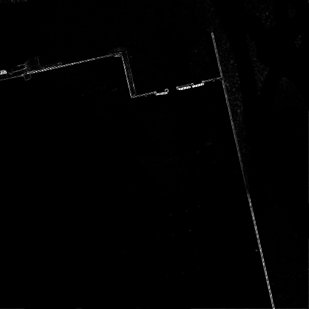

Hi there,
I'm experimenting with image recognition in Nodebox 1.9.5.
This code detects lines in small images up to 200x200px, but doesn't work with big or edge-detected images:
defhoughTransform(im):
width, height = im.sizesize(width, height)
rmax = int(round(math.sqrt(height**2 + width**2)))print rmax
acc = zeros((rmax, 180))for x,y in[(x,y)for x inrange(1, width)for y inrange(1, height)]:
if im.getpixel((x,y)) == 255:
for m inrange(1, 180):
arg = (m*math.pi) / 180
r = int(round((x * math.cos(arg)) + (y * math.sin(arg))))if0 < r < rmax:
acc[r][m] += 1max = 0for x,y in[(x,y)for x inrange(rmax)for y inrange(180)]:
if acc[x][y] > max:
max = acc[x][y];
r, theta = (x,y)
piTheta180 = (math.pi * theta)/180
cosTheta = math.cos(piTheta180)
sinTheta = math.sin(piTheta180)if(r/sinTheta) > height:
m = -1 * math.tan(piTheta180)
c = int(round(r/cosTheta))
upper = (c,0)
lower = (int(round(abs((m*512)+c))),512)else:
m = (-1.0) / math.tan(piTheta180)
c = int(round(r/sinTheta))
c2 = int(round(r/cosTheta))
upper = (c2,0)
lower = (0,c)return upper, lower, r*cosTheta, r*sinTheta
importmathfrom Numeric import zeros
img = "image.jpg"from PIL import Image
im = Image.open(img)
im.show()
points = houghTransform(im)
upper = points[0]
ux = upper[0]
uy = upper[1]
lower = points[1]
lx = lower[0]
ly = lower[1]print points, upper, ux, uy, lx, ly
stroke(0)line(ux,uy,lx,ly)
Needs PIL.
Can you help fide the bug?
Posted by Alexander Lysov on Apr 03, 2010
Oh, it simply works only with one-channel grayscale images.


line detection
Posted by Alexander Lysov on Apr 03, 2010
Hi there,
I'm experimenting with image recognition in Nodebox 1.9.5.
This code detects lines in small images up to 200x200px, but doesn't work with big or edge-detected images: